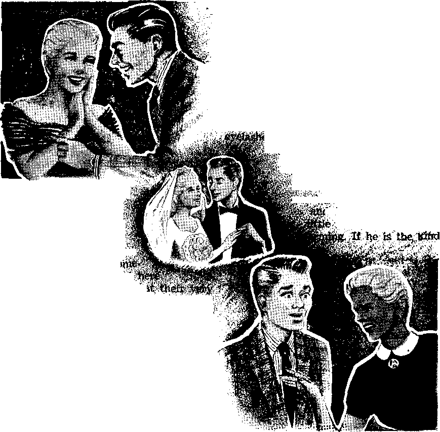
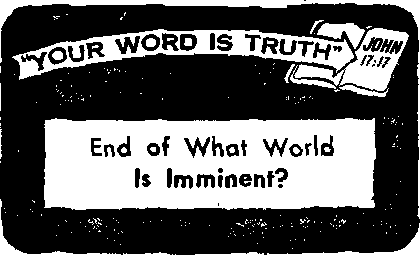

Why Spiritual Famine in Time of Plenty
Who’s to Be Head of the House?
Mexican Press Hits Religious Intolerance
ft New Nation Is Born
JANUARY 8, 195E
THE MISSION OF THIS JOURNAL
New* sources that are able to keep you awoke to the vita) lMue> of out time* mutt be unfettered by censorship and selfish interests. “Awake!" has no fetters. It recognizes facts, faces facts, is free to publish facts. It Is not bound by political ambitions or obligations; it is unhampered by advertisers whose toes must nat be trodden an; it is unprejudiced by traditional creeds. This journal keeps itself free that it may speak freely to you. But it does not abuse its freedom. It maintains integrity to truth.
“Awakei" uses the regular news channels, but Is not dependent on them. Its own correspondents are on all continents, in scores of nations. From the four corners of the earth their uncensored, on*the-scenes reports come to you through these columns. This journal's viewpoint Is not narrow, but i» International. It Is read tn many nations, in many languages, by persons of all ages. Through its pages many fields of knowledge paw In review—government, commerce, religion, history, geography, science, soda! conditions, natural wonders——why, its coverage is as broad as the earth and as high as the heavens.
“Awake!” pledges itself to righteous principles, to exposing hidden foes and subtle dangers, to championing freedom for all, to comforting mourners and strengthening those disheartened by the failures of a delinquent world, reflecting sure hope for the establishment of a righteous New World.
Get acquainted with "Awakei" Keep owake by reading “Awake!"
■ WHO ■
PtjBUflHro Semimonthly by
WATCHTOWER BIBLE AND TRACT SOCIETY OF NEW YORK, INC. 117 Adams Street Brooklyn 1. N.Y., U.BuL
N. H. Know, PrwW Gbamt B&retarif
Printing this Issue; 2,600*000 Five cents * copy
Oikdy ifljtfUfM to width “Awiksl" fa
S«mf monthly—-Afrikaans, Dtnteh, Dutch, SYnntoh, French, Garmin, Gmk, Indite, Japanese, Norwegian, PortwiMse, Wptntoh, Swedish.
Monthly—IndcmaiiD, Ukrtluitu.
Yearly eutwrlpllon r&Lu
Offitm for semlthtmlUy editions
Aiwvlea, U.S,, IK Adamu St, Brodriyn 1/N.Y. |1 AHCtralla, 11 Bernstorf Bd., SuMbfleld, N.8.W.
Cadada, 150 BH^jeland Ave., Toronto If*, Ont
fnstowt 34 Craven Tomee, lundofl W. 9
ftaftfMMj jbedd te msC to rfks to fscr awa&y to rompUajice with regulations to guaranta oats dalfrtf) of Remittances are accepted at BranUjo rraffl
czxifltriw whero no office 1b located, by IntenultonaJ money or^er only- Subscription rata to different countries an here Eito tod io tail currency. Hatta of «• plrrftoa (with renewal blank) to sent at toast two Imuu before subscription expires. Chug* *f addrew when sent to our oftta may be expected effective within mt month. fitamf futtr ttM as well as jmw addrw.
Entered u Mcind-elaa mattv at Brooklyn, H, I.
Mated In U.S.A.
Mnnthly editions Oflt hilt the there rota
Th* Blta translation aiad la “Awake!” h the «ew World TranelatloH of tM Holy Srl Fires. When othar tranilatlofia are iiel tH following aymteu will appear bUlHd the eltattonei
|
AS - Ainotean Standard Version |
Dv - CsLholic Dow wralon |
Mo - James Moffitt's Wricm |
|
AT — An American Translation |
ED — The Emphatic Diaglott |
Ro - J. B. RmhertumfB nrotaii |
|
AV - Authorized Version (1611) |
JF ~ Jewish fubllcaLton 8oc, |
jf?S - Bevtad Standard Version |
|
Da - J, N, Darty's version |
Le - toaac Leeser’s Verdon |
F$y - Robert Young's eerdon |
|
Are You Looking for Truth? |
3 |
A New Nation Is Bom |
21 |
|
Why Spiritual Famine in Time of Plenty |
5 |
The Merino—King of Woollies |
24 |
|
Who’s to Be Head of the House ? |
8 |
“Your Word Is Truth" | |
|
We Must Have Water |
13 |
End of What World Is imminent? |
25 |
|
Danish Branch Dedicates New Home |
15 |
Jehovah's Witnesses Preach in All | |
|
Mexican Press Hits Religious Intolerance |
17 |
the Earth—Lebanon | |
|
An Upside-Down Existence |
20 |
Watching the World |
TRUTH is widely acclaimed. Many profess to seek it. With so many praising it and so many professing to seek it, we often take it for granted that almost everyone is looking for truth. How contrary to reality!
It surprised many people last year when quiz expert Charles Van Doren, on NBC’s "Home” TV show, talked about the average person’s interest in truth. “I am a teacher,” said the quiz wizard, "because I am interested in the truth. That statement may sound presumptuous. . . . Presumptuous, because I may be asked, ‘.Well, isn’t everyone interested in the truth?’ My answer is no, they are not. Most people are interested in success, or making money, or having a good time. Only occasionally do they think about the truth itself.” —Radio Age, April, 1957,
How true that is! People will turn an ear to all kinds of schemes, propaganda, inane and vapid talk, worthless ideas, pleasure-seeking plans and money-making prospects. But let truth come their way and how often do their ears turn away! Van Doren has simply observed an obvious fact that people seldom like to face. Long before the quiz expert expressed it, others had observed it, such as the arctic explorer Vilhjalmur Stefansson, who once said: “The most striking contradiction of our civilization is the fundamental reverence for truth which we profess and the thorough-going disregard for it which we practice.”
Since that is the way people in general behave toward truth, what may we expect when it comes to God’s truth? Can we ex-pcet a different attitude when it comes to the knowledge of God’s purposes? No, we can not. In fact, we can expect even more tumed-away ears, for people in general are not interested in learning God’s truth. They are not looking for the truth.
In a prophecy concerning the “last days” the apostle of Christ foretold this prevalent condition among the masses of professed Christians: "There will be a period of time when they will not put up with the healthful teaching, but, in accord with their own desires, they will accumulate teachers for themselves to have their ears tickled, and they will turn their ears away from the truth.”—2 Tim. 4:3, 4.
That is what the people have done in Christendom. Any preacher that will tickle ears gets ears. But speak the truth and ears turn away from it. How foolish! How
unreasonable! Then why turn away from truth? Truth is not pleasant to all ears. Hard-hitting truths exposing error and false doctrine do not tickle ears. The prophets of God in old times did not tickle ears; they told severe truths, and they were hated and killed.
Because truth does not soothe the itch for something soft, people turn their ears away. To where? Says the Bible: “They will be turned aside to false stories.” —2 Tim. 4:4.
What a shocking surprise, then, awaits the person who has looked for God’s truth and has found it! He naturally expects other people to be eager to learn it also. Certainly they will give their ears, he thinks, to the truth. But no, he finds out the fact that Van Doren stressed, that the masses are not interested in the truth.
The truth may be disturbing, and people do not want to be disturbed. Noah must have disturbed the people of the preflood world with the warning announcement of impending destruction from God. It was truth that was unpalatable to a whole world of people! So they turned their ears away from it. It was to be the same today. Said Christ Jesus in his great prophecy for the “last days”: “For as people were in those days before the flood, eating and drinking, marrying and giving in marriage, until the day that Noah entered into the ark; and they took no note until the flood came and swept them all away, so the presence of the Son of man will be.” —Matt. 24:38, 39.
And so it is that during this time of Christ’s second presence, despite overwhelming evidence of it, the people take “no note.” The truth that we are in the “last days,” and that there is only a short period of time remaining before Armageddon sweeps this world away in destruction, is a truth most people are not eager to hear. Indeed, they not only turn their ears away from it but they ridicule it. They scoff. They laugh. They give no serious consideration to the evidence. They accept every other explanation for the world’s mounting woes than the Bible’s explanation. Willfully they keep themselves ignorant of the truth, just as the apostle Peter foretold:
“For you 'knbw this first, that in the last days there will come ridiculers with their ridicule, proceeding according to their own desires and saying: ‘Where is this promised presence of his? Why, from the day our forefathers fell asleep in death, all things are continuing exactly as from creation’s beginning.’ ” And why do the people put up an argument like this—one that is obviously false, because it failed to be sound reasoning for the preflood people, who must have told Noah something similar?—2 Pet. 3:3, 4.
They use it, as the Bible shows, “for, according to their wish, this fact escapes their notice, that there were heavens in ancient tifnes and an earth standing compactly out of water and in tbe midst of water by the word of God, and by those means the world of that time suffered destruction when it was deluged with water. But by the same word the heavens and the earth that are now are stored up for fire and are being reserved to the day of judgment and of destruction of the ungodly men.”—2 Pet. 3:5-7.
People turn away from the truth "according to their own desires,” “according to their wish.” As An American Translation phrases verse five, “they wilfully ignore the fact that long ago there existed” a world that God destroyed.
So people do not know the truth because they do not want to know it. The truth is available today to those willing to look for it. Life depends on looking for it and finding it.
Are you looking for truth?
-Vro
to&...........
The spiriittai famine today fej as great aa th® HtewJ famine flwit afflicted Wyirt'
time . ®f Jo»eph. Why ? And where' ct» spMtna.1 food llxs f mkmI ?
Mi
-MM
TODAY a time of plenty?
Hardly., as regards material things. It is no time of plenty for the common people behind the Iron and Bamboo Curtains, nor for those in Italy, Spain,-France, etc. In fact, with but very few exceptions, economic woes are plaguing all lands. Even in the United States there is a slowing up, as inflation and overproduction threaten its time of plenty.
However, this is a time of plenty as regards spiritual things. A time of spiritual plenty? Yes, throughout the world there is a time of spiritual plenty among a. group of dedicated Christians known as the New World society of Jehovah’s witnesses. These are' enjoying an abundance of spiritual food and water of life in the farm of new Bible translations, improved. Biblestudy aids and a steady stream “of -magazines containing up-to-date Bible truths, to say nothing of the spiritual feasts being served at their five weekly congregational meetings and at their various general assemblies, Their exalted condition ■ of worshiping Jehovah is the "mountain” in which he is making, as prophetically foretold, “unto all peoples a feast of fat things, a feast of wines on the lees, of fat things full of marrow/*—Isa. 25:6, AR
iisiiaisB
?:N/:.ypw ...............
As a result of this time of spiritual plenty 'the New World society is vigorous, healthy and strong. Proof of-this is seen in the Yearbook of Jehovah's Witnesses for 1958. During the preceding year the witnesses saw a 10.4-percent increase for a total of 653,273 ministers,, who devoted over 100 million hours to preaching. .'And . note that • that figure does not represent mere joiners or “members," but includes only "those who devoted some time each month to preaching the good news, attending each week., on an average, from three to four one-hour congregational Bible meetings. No wonder the pope complained about their activity in Rome (which is typical): "Jehovah's Witnesses zealously push propaganda into private homes. They divided Rome into zones visited daily by 75 propagandists,” etc. (Time, April 22, 1957)1 Proof of their spiritual vigor is also seen in their ‘keeping without spot’ from the world’s materialism, politics and morals. And apparent to all, especially at their large assemblies, is their happiness and loving unity, further evidence of their spiritual prosperity, 'for they are not. divided because of color, race, language, nationality or social standing. And what these especially rejoice in is the possession of Jehovah’s name and the hope of his kingdom. —Jas. 1:27.
All this is in striking contrast to the spiritual famine that afflicts Christendom and the rest of the world. Only a spiritual famine could bring about the conditions described by various religious leaders. Thus, in addressing the Catholic Laymen’s Retreat League, Roman Catholic priest John J. O’Connor stated that ‘the number of youths who enter the Navy with no sense of moral responsibility is unbelievable.’—The Register, October 13, 1957.
And a New York city rabbi, Dr. Louis I. Newman, says: “True religion and morality are being overwhelmed by the flood of deceit, treachery, greed and rapacity, which are the hallmarks of our day.’’ —New York Times, March 24, 1957.
Likewise giving testimony to a spiritual famine are the remarks of Dr. Robert J. McCracken of New York city’s Riverside Church to the effect that sports lovers know more about their sports than churchgoers know about their religion: “Ask the majority of church members what they believe and after a few halting, fumbling sentences they would be through, and for lack of intellectual understanding, not of words.” Nor is this condition limited to the United States. Dr. David H. C. Reed, another leading clergyman of New York city, warned that the whole world is faced with a “religious vacuum on a scale never seen before.”—New York Times, March 18, January 21, 1957.
Contrasting this spiritually famished condition with the time of spiritual plenty, God’s Word says: “Thus saith the Lord Jehovah, Behold, my servants shall eat, but ye shall be hungry; behold, my servants shall drink, but ye shall be thirsty; behold, my servants shall rejoice, but ye shall fee put to shame.” Obviously these are the days foretold: "Rehold, the days come, saith the Lord Jehovah, that I will send a famine in the land, not a famine of bread, nor a thirst for water, but of hearing the words of Jehovah.” What makes this spiritual famine so serious is that we are living in a time of judgment, at the very threshold of Armageddon, at which time all Buffering from spiritual famine will be destroyed. No wonder we read: “My people are destroyed for lack of knowledge.”—Isa. 65:13; Amos 8:11; Hos. 4:6, AS.
Why a Famine
Why this spiritual famine? Because tht religious leaders of the world “have re jected the word of Jehovah; and what man net of wisdom is in them?” As did ancien Israel, Christendom’s leaders “have com mitted two evils: they have forsaken [Je hovah], the fountain of living waters, ant hewed them out cisterns, broken cisterns that can hold no water.” Because they hav< rejected God’s Word he has kept under standing from them, and so it can be salt that he has sent the spiritual famine.—Jex 8:9; 2:13, AS.
On the one hand there are the fundamentalists that blindly and stubbornly hold on to their creeds and traditions and who try to twist both reason and the Bible to fit their beliefs. lake the Pharisees of old, they make the Word of God of no effect by their tradition. (Matt. 15:1-9) On the other hand there are the modernists that, in their worldly-wise conceit, hold that the Bible is not reliable history and that Jesus believed its claimed miracles only because he did not know better.
Representative of such men are the editors of The Interpreter's Bible, who state; “The Bible is unique as the Word of God, but it is not unique in being free from error in all matters of scientific interpreta-
tion and historical accuracy.” Regarding the account of Jonah it states: “If it is history, it is exceedingly curious history," It denies that any man was ever swallowed alive by a fish and lived to tell it, as if God could not have performed a miracle and preserved Jonah. And this is the leading authority modern clergymen consult for ideas for their sermons! Truly “the wisdom of this world is foolishness with God,” and with the clergymen preferring worldly wisdom no wonder there is a spiritual famine.—1 Cor. 3:19.
Another reason for this spiritual famine is that the clergy preach social and political reform instead of the good news about God’s kingdom. Thus a Catholic bishop of West Germany forbade Catholics to vote for the Social Democratic party. (New York Times, June 4, 1957) And the same paper, in its issue of February 2,1957, told of a Roman Catholic priest who lost his United States citizenship because he voted twice while in an Italian monastery; he had done this, however, under compulsion of his superiors. In fact, a committee of 190 laymen in the National Council* of Churches so strongly objected to the clergy’s mixing in politics that their clerical superiors permitted their committee to be dissolved.
Another reason for the spiritual famine is that the clergy are more concerned with self-gain and pleasing their flocks than with pleasing God, and laying up riches in heaven. Far from being like the apostle Paul, they are like the scribes and Pharisees. (Gal. 1:10; Luke 16:14) In order to attract large crowds, regardless of their love for God, his Word and his principles, the clergy resort to gambling devices, dances, free meals, puppet shows, cowboy stunts for the youngsters, jazz bands, etc., using for their sermons any subject of current interest.
As Kermit Eby, social scientist at the University of Chicago, expressed it: “The church has become respectable—a please-the-crowd institution, instead of an unfettered champion of principle. . . . This trend to respectability and conformity has undermined the Church as an instrument of God."—The Detroit News, July 29,1956.
Foretelling these conditions God's Word says: “There will be a period of time when they will not put up" with healthful teaching, but, in accord with their own desires, they will accumulate teachers for themselves to have their ears tickled, and they will turn their ears away from the truth," And further: “An appalling and horrible thing has happened in the land: the prophets prophesy falsely, and the priestts rule at their direction; my people love to have it so.” So both clergy and so-called laity are responsible for this spiritual famine. —2 Tim. 4:3, 4; Jer. 5:30, 31, RS.
Seeing that there is indeed a spiritual famine throughout the world and knowing what it will lead to, and at the same time noting where there is spiritual plenty, he who is wise will not continue to suffer spiritual hunger but will take advantage of the spiritual feast offered to all by the New World society of Jehovah’s witnesses.
<1 ‘‘In Princeton," reports The Saturday Review, "the University Book Store sold so many books about birds In the past year, the management decided to add a sideline: an Audubon Bird Caller, which retails at $1.25. It has delighted the customers, too—all but one, that is, who brought the caller back in a huff and reported bitterly, ‘I have called birds with this blasted thing now for three days straight— and the only answers I got back were from squirrels!’”
A woman takes a sharp look at the struggle for power between man and women and hands down her findings
A ^|Z»O DOUBT you have % J noticed that men and H/B'1 women act differently.
^7 " This has been going on for years. Perhaps you have also noticed that there has been a change in the difference. We mean that brawling he-men and fragile ladies seem to be a thing of the past—a kind of switch in traits, you might say.
who’s
TO BE
Starting with the ladies first and looking backward into the pages of history, we see that they accepted their subordinate position quite gracefully, it would appear. Those women who shone as dominant forces behind men or instead of them could not have been in the majority, else their mention would not be extraordinary. The picture that comes through is that of a man’s world, with women accepting a secondary power as their' own.
Then came the revolution, reformation or whatever you want to call it. Women exerted themselves until they accomplished what they called liberation. The emergency of the first world war encouraged the ladies to step out into the world of men and to compete with them. And they soon found that they did very well at it, thank you. The better they did, the better they liked this thing called freedom.
World War I over did not find them returning to the doldrums of home life, but on to newer and larger acquisitions in this man’s world. They set out to prove to the men that ‘whatever you can do I can do better.’ The polite word came to be “career.” Women were out to assert themselves in their newly found freedom and to compete with their heroes. and they enjoyed winning at tne game.
The second world war sent this ball rolling even faster, with more women needed in men’s jobs and learning men’s skills, until many a smart girl can now look for her job under the Men Wanted columns of ads. Women went into the professions, into the arts, into everything. They proved what psychologists have agreed is true—brains are not necessarily handed out by sex.
This all had the effect of delicious champagne. It went to the fair lady’s head.
But now what bearing did this have on the male population? Women Went right on having babies—either after a career or along with one. And what kind of home has it been for the male babies to grow up in? With mother sure she can run things efficiently,' now she turns self-confidently to the home. With her strong will showing forth so brilliantly, little Junior not only is “run” by mother but can see that his father also consents to be. From such a home has come'many a child whose every ambition was invented and maneuvered by his mother. A mother who cherished the power that transplanted a real, unselfish love, a power that goaded, him on to his every accomplishment, while increasing his dependence upon woman as a prop.
But, then, should not the man of the house give in to his wife sometimes? Should she not have her way occasionally? After all, marriage is not a case of slave and master, is it? In her strenuous effort to live modem and prove that the latter-is not right nor should be the case in marriage, she has gone over the boundary lines too far and insisted on running things her way too often. There is a time when all
Let’s see if "f
this starts.
we can find where it is. i
Reconstruction Sets tn# When his lordship comes calling on his favofc’A ite miss and sparks of so thing like love are kindle*^ is where we have our two’ . best. Tn fact, their best is just too young man is expected to be the Don Juanf the sheik who sweeps his lady away into the night, the prince of her dreams—for romance is what the little lady wants. After all, she has been brought up to expect it; to expect him to be a man, a wonderful, assertive, swaggering hulk of a man. (Obviously, this is a throwback to the old-fashioned way of thinking.)
Her sweet little feminine ways of acknowledging him as superior prove to him that is just what he is, master of all. No doubt about it, she is just the girl for him. She sees everything his way. He says something—she agrees. They were made for each other. So they go off to tell the minister as much and to get his benediction.
Now what happens only someone with a ripe case of schizophrenia could probably explain. Along with her trousseau she had
a bomb hidden—a do-it-yourself kit and a book of instructions on “How to Make Over the Human Male.” Sometimes this is a delayed-action bomb, and the explosions and convulsions in this happy new life come along a little later. This no doubt depends on how sterling a character is at the helm.
A bewildered husband who was permitted the luxury of feeling a man before ;■'p^jrigge, looked up to with fluttering ’ ‘ $s and simpering assurances that
was the stronger sex, now ^'gets the works. This little '■''■'■' slip of a girl he married and succeeds in put-pver all her own likes ^’dislikes, and little by -sh& has. him con-
that does not conform so quickly the explosions are that much louder, A pretty little pout, a tear here and there, a sudden headache—all these are just as effective as the inquisitional rack in changing the male mind.
And that seems to be the one and only ambition. After all, it is only reasonable: after conquering the world, if not by her then by her sisters-at-the-trade, as is so frequently demonstrated by the propaganda of the movies and modern novels, the confines of the home are unbearable if there is no one around to run as you please.
A Sticky Mess of a Man
On top of this upside-down situation we have, of all the inconsistent and contribu-tive things, men setting up the female as one to worship, while at the same time seeking to identify themselves with the hero of her dreams. Modem man has created his Frankenstein and is obliged to be kicked in the face with it. Putting woman on a pedestal to be worshiped by him; imaging the ‘perfect’ figure and finding the female to fill the shell; openly advertising his dependence upon her for all his happiness—and what does it add up to? A sticky mess of a man, and a woman who is no woman at all.
Nothing new about the magnetic attraction of male to female. This is a thing created. It is not against this that the fault lies. But somewhere along the line somebody expanded this whole business, exploded an atom of reality into something he himself seems to have no control over or wants no control over. No doubt this was fuel to the fires that led to woman believing she should run things her own way, giving her a goddess complex.
Add to this some men who seem to have the idea that they are natural polygamists. Whether this seeps into the brain by way of osmosis on his way up to adulthood or by whatever devious way, it gets there in these individuals. Figures do prove it is the men who practice promiscuity far more than the women. One reason for his seeking outside “understanding” of a female variety may be that he is not given his proper role at home, and so goes abroad in search of it.
And the natural reaction to this? You guessed it! A female who feels insecure. And the natural reaction of an insecure woman? Run the male in the family. As long as she felt she could run things she felt she had fastened male dependence upon her, and often did. And how does the male child emerge from these surroundings? Not a strong man with a healthy concept of what he should be, but a weak, frustrated one, confused and dependent upon a woman. In a wife he looks again for one to te&n on, vrttite at the same time resenting her female domination.
Who Makes the Decisions?
And, mind you, this all starts with the little things. It is only little things that keep coming up day after day, isn’t it? The big decisions, big moments, happen only at rare times.
A husband and wife are at least as close as the eyelid to the eye; are they not, in fact, pronounced one at the nuptials? You would not wait until you got a large stick pushed into your eye to have it cared for. A tiny speck of dust can start up an irritation that will not allow you to forget the injury. So tiny, in fact, that a physician must use a magnifying glass to find it. It is the same with two persons living together in marriage. Unless one recognizes the other as head—and the head should be the male—tiny flecks of dissension are bound to grind into the heart and set up a constant irritation, the kind of irritation that grows.
This matter of making decisions, even in little things, must be faced with a fore-
knowledge of who really should be running matters. If this fact is not settled' according to right and proved principles, a principle that nature itself dictates, a fatal affliction will plague the marriage. The inherent nature of man, not woman, is to take the responsible head position in the home.
Granted, lots of men need making over. But if the girl is all as smart as she thinks she is she will not be marrying someone who desperately needs a remake job. On the other hand, many a man can actually be made into just that by an intelligent and persuasive feminine force for good. Inconsistent? Not really. Allow your man to see with your own example of compliance to his ruling that you do love and respect him, that he is the head of his own home, that you are not competing with him to show how “smart” you are. And this must be done genuinely.
Now, with his confidence won, you can actually say things that mean much good for him, either in seeing himself clearly or in seeing his need for a change in some way of thinking. After he respects you for respecting him as the head man, your influence for good is unlimited.
How Men Lose Manhood
Now what has been the resultant reaction upon the meh who, far peace-in-the-home or just-tired-of-wrangling excuses, allow their women to take over the running of home and family? Just this: We have a male child whose naturally dominant nature has been choked from him by his mother’s apron strings. We have a boy who stands by and watches and perhaps gets to loathe the situation that forces his father into an obscure corner of family life. We have a man who starts his own married life with mixed emotions about what he should be, what he wants to take place as in resistance to his own youthful experience, and who at the same time has his world built around his dependence on a woman.
He no longer cherishes the thought of being with his chosen one, as much as he feels he must prove to her that he is better and smarter and must compete in every direction he takes to prove this. Why must he feel he must prove? Because his wife does not give him the feeling of security. Yes, actually a feeling of security. No, not by supporting him, for if he had a dominant mother he had too much support. His security lies in her acknowledging him to be what his own inherent nature says he should be—the head of the family. With this confidence behind him his competition and strife are all outside the realm of his family life and are small in comparison.
A man should know that he who does not rule his own home with dignity and love, or who does not appreciate that he should do this, is not really a man at all. The idea that the end of a man’s responsibility is providing a roof over the head and food on the table, and that love is demonstrated by embellishing these necessities as much as is materially possible, is a disease that has grown along with the shifting of authority to the woman in the home. The father who has shirked his obligation toward his children and permitted it to be carried entirely by his wife has already lost his position in the home as the head of the family.
Love Reaps Love
Every woman1 who reads this with a flush of anger will rebel at the thought of giving the edge to her man, calling it outdated. “After all, look where we’d be if I’d done that before! What would we have? What kind of silly decisions I’d have to put up with!” she will be thinking to herself. To these we say: All right, then, prove it! Just try giving your man the say in a few small things and watch a change come over the place. If you have not been doing this you will get the maybe-she-does-love-me-after-all kind of attention.
In case you think that if this is carried too far it will all end up in a dictatorship taking over the home fires, there is a check on men too. If you, as a woman, give him his rightful place, aren’t you just really demonstrating the deep love or respect you have for him? On the other hand, his exercise of power must be with the same consideration, a demonstration of his love.
Each is supposed to look upon the other as his own flesh. Two become one at marriage. If a giving kind of love exists, and surely it must at least have started out that way, he will not do anything that will harm the one he loves as his own flesh. This loving response from a husband is sparked only by the first show of love on the part of his wife, her acknowledgment of him as the person he should be.
Any intelligent woman knows it is much more difficult to take the passive part in marriage. Why, it must be so—all evidence indicates that if a woman is allowed the slightest opportunity to run things her own way she will jump at it! And that is the same as one person having two heads. A pugnacious situation, if ever there was one.
Another check on husbands overworking headship privileges. Conceivably, men get married to establish a family, a home, roots in the earth and that sort of thing. Then if judgment is left to them, surely they are going to decide things in a way to better their hopes of accomplishing this. To achieve that basic desire the ones who represent most to him in accomplishing this end are going to matter very much. His role as protector will become clear as he is recognized as one.
What Is Best for Both
In order for all to be happy the home must be unified, and that under the one rightful head. Men want this. Whether thev express it subconsciously or openly, they want it Women want it too. How many of our headstrong ladies who have proved themselves so efficient with a tightfisted control over men at the same time moan for the kind of man who takes that control from her!
Many American soldiers are proving this by growing numbers of Oriental romances. Joshua Logan, Broadway producer, asked many GI’s why, and was told it was because of the quietness and gentleness that they create in the home, in direct contrast with our American homes. “The customs of Oriental life might be a good thing for the American woman to investigate. . . . She is a loving helpmate in the truest sense. . . . The coming home of a man to his wife in Japan is made into a big event. Each night he is welcomed as if it were his first trip back from a long journey. She changes for him the whole rhythm and climate of his day.”. Logan added that this is true as long as the home stays in the Orient, but that, like so many of her sisters from other lands who have attracted the GI, she too quickly becomes Americanized when she comes to the United States.
Serenity in the home is a much-needed atmosphere in many parts of our hectic world. There is no other way to attain it for the lasting benefit of the man, his wife and their children than to make certain each keeps his place in the order that is stressed in a proved formula for happiness, God’s Word, the Bible. No one has come up with an improvement on the arrangement and no one ever will, because creatures inherit naturally their own position in this earth. It is only by attempting to change things to another way that the unnatural develops into degradation and unhappiness. Keep the difference the way it should be, as Jehovah made it.
MAN’S great dependence upon water is seldom appreciated in water-abundant areas. He cannot live without it. His body is 70 percent water and his food is 60 to 95 percent water by weight. Yet the water supply-is taken for granted. Instead of respecting and protecting it man has been wasting and ruining water resources. It is small wonder, then, that a water shortage now threatens many parts of the United States.
An alarming drop in the water table has suddenly caused great concern over the nation’s water resources. Here is what 17.8. News & World Report feays about it in its issue of July 8, 1955: “Ordinary water, which most people take for granted, is on the way to becoming a national problem of great, even dangerous size. Water today is short in many parts of the country. In the Southwest and Far West that problem of water shortage is an old one. It, continues to grow more critical. Now there are parts of the East and Midwest where the supply of water threatens to run below demand. Farmers complain that the wells and springs upon which they have depended are going dry as the level of water in the ground gets lower.”
It is now necessary to go much deeper for water than it was twenty or thirty years ago. Near Baltimore, for example, the water table has dropped 146 feet in the last thirty-two years. In Milwaukee spring water has dropped so low that the breweries may have to use lake water. Regarding the water table near Phoenix, Arizona, The Atlantic Monthly said: “Outside Phoenix, Arizona, Goodyear established a farm 35 years ago to grow highgrade cotton. Originally the irrigation water was brought a mere 20 feet to the surface by small pumps. With every passing decade the water table has dropped, and the pumps have had to be replaced with more powerful models. The lift is now more than 100 feet, and the table is still sinking. The same pattern has been repeated in hundreds of other localities.”
There are two principal causes for ' his alarming situation. One is man’s ruthless destruction of forests and grasslands, which allow rain water to soak into the ground instead of running off the surface. The other is a skyrocketing demand for writer. In five years’ time, from 1950 to 1955, the nation’s water use leaped from 185 billion gallons a day to 262 billion. This was due primarily to the increasing demand for water by modern industry.
If man had cut industry’s great waste of water and had respected and cared for water resources, there would be no threat of a water shortage.
Governmental authorities view the future with alarm. By 1975 they see an increase in water consumption to 453 billion gallons a day. This means that the demand for water will be 25 percent more than the available supply. They well know tnat something must be done toward preserving the nation’s water supply, for a nation cannot exist without water. Industry needs it, farming needs it and the nation’s growing population needs it.
The situation well illustrates the need for appreciating, respecting and caring for the tilings God provides man. As man has failed to do this regarding natural resources, so he has failed to do it regarding spiritual Resources. The result is an acute spiritual famine. It was foretold long ago by the prophet Amos, who said: “Behold, the days come, saith the Lord Jehovah, that I will send a famine in the land, not a famine of bread, nor a thirst for water, but of hearing the words of Jehovah.” —Amos 8:11, AS.
It is a famine for the spiritual waters of Kingdom truth.
The world’s famine for these waters is far worse than any literal water shortage. As a result, its spiritual condition is like a parched wilderness that is without water.
Religious Christendom cannot relieve the situation, because she is part of the world. She is without spiritual waters of truth and can offer none to the rest of the world. Her condition is the same as theirs. Instead of offering the world nourishing truths from God she gives them human traditions and human philosophies. Her religious organizations are like broken cisterns or reservoirs that can hold no waters of truth,—Jer. 2:13, AV,
Christendom’s failure to teach Scriptural truth was admitted by clergyman John H. McComb, who said: “The Protestant Church is literally famished for the Word of God. It has been fed on philosophy and political economy, and sociology and psychology and mere ethics until the souls of its members are starved for they know not what.” The same can be said of the non-Protestant element of Christendom.
But not everyone is in this spiritually famished condition. There are multitudes who are conscious of their spiritual need, and wno have come to the waters of Kingdom truth that flow out from God through his Theocratic organization. They have drunk of these waters and been refreshed. “And he showed me a river of water of life, clear as crystal, flowing out from the throne of God and of the Lamb . . . And the spirit and the bride keep on Saying, ‘Come!’ And let anyone hearing say, ‘Come!’ And let anyone thirsting come; let anyone that wishes take life’s water free.”—Rev. 22:1, 17.
These multitudes now form a New World society. Their spiritual condition is no longer like the parched land of a wilderness but is, instead, like a well-watered desert that blossoms with good fruit. Isaiah foretold this transformation when he said: “The wilderness and the dry land shall be glad; and the desert shall rejoice, and blossom as the rose.” (Isa. 35:1, AS) God’s life-giving waters of truth are the cause of this change.
Man must respect God’s provisions whether they be waters of truth or literal water resources. Neither should be defiled or improperly used. Man’s life depends upon both. Those who show this respect and drink the waters of truth that flow from God will see the day when earth’s water reserves will abound in all areas. They will see the whole earth like the garden of Eden with inhabitants that possess the gift of eternal life.
By “Awake!*' corftipondent In Dertmark
SIXTY-SEVEN years ago Charles T.
Russel], the Watch Tower Society’s first president, visited Scandinavia. Back there, in the year 1891, he named Denmark as being among the lands whose ‘mature fields were ready to be harvested.’ This harvesting began in 1894 with the distribution of the volume Millennial Dawn in Dano-Norwegian and continued with the printing of The Watchtower in Danish in 1900 and regularly since 1903,
By 1955 we had between eight and nine thousand witnesses of Jehovah here in Denmark. That year the Society’s president, N. H. Knorr, visited us after a series of European assemblies and began investigating possibilities of buying ground and building a new Bethel home and printery so that the Society could print its own magazines here, even as it does in so many other lands.
A suitable location was found and purchased in November, 1955. It is situated on a main highway at the northern edge of Copenhagen in the pleasantly wooded residential district of Virum, After first removing an old factory, we started excavation and by July, 1956, the pouring of concrete began.
The regular construction crew was supplemented by volunteer witnesses, both men and women, who came from the various Copenhagen congregations and helped on weekends as well as in the evenings. Owing to all this help and a mild winter, by February, 1957, the concrete work was finished. With, more volunteer aid from brothers serving as skilled bricklayers,
plasterers, carpenters, plumbers, electricians, etc., the building was completed and ready for dedication by August 31, to the great surprise of all in the vicinity.
The building consists of three parts: a main structure of two stories, 140 feet long and 46 feet wide; a forty-six-foot-square one-story printery; and a twenty-five-foot wing that connects the printery with the main building at one end in the rear. A basement runs the full length of these three parts. Large white concrete frames serve to frame in the room sections, while the space beneath the windows is finished off with light-brown crushed stone.
Coming into the front entrance of the first floor of the main building we find on the right the 160-seat Kingdom Hall for the use of the branch family and the Virum congregation. Going left from the entrance we enter the reception room, lounge, conference room, library and then the large, well-lighted office, whose acoustic-tiled ceiling provides ideal working conditions.
From the office we pass through the large stock and storage room and out through the wing into the printery. It has a W-shaped glass roof, which results in excellent lighting. At present 150,000 copies of The Watchtower and Awake! are being printed here each month, in addition to handbills, forms, etc.
The northern half of the basement under the main building contains the laundry, food storage, kitchen and dining room. The latter two rooms open out onto a terrace in the back that connects with the driveway. The rest of the basement, under the main building as well as under the wing and printery, serves for storage and stock. The second floor of the main building has twenty commodious rooms, each serving well as living quarters for two persons. These rooms are furnished simply but adequately with furniture made, for the most part, by volunteer workers.
At the dedication of the building on August 31, more than 150 of the 413 present were people from the neighboring community. They heard several representatives of the Society give its history and explain its purpose. The dedication talk was given by the branch overseer, R. E. Abrahamson. Among other things, he showed that the construction of this building was in keeping with the policy of God’s servants ever to use the best means available to record and reproduce information concerning Jehovah’s will, in order to make it known to others.
Afterward all were conducted on a tour through the building, and during the following week the witnesses in Copenhagen and vicinity were invited to see the completed building, which literally hundreds of them had had a share in constructing. In all, 4,763 took advantage of this invitation. The witnesses of Jehovah in Denmark are happy for the part they have had in making this building necessary by their ministerial activity, as well as for the share they had in supporting the building program with money, material and labor.
Front (above) and rear (below) views of new building housing Danish branch of the Watch Tower Society.
PRESS HITS -exssss®>
ONE hundred years ago the political constitution of Mexico began to mark a turning point in grantingen-larged individual and collective freedoms to people of all social standards. Under this constitution all property of the Catholic Church was secularized. But there have been times when efforts were made to establish other forms of government. One example was during the decade of 1860, when Napoleon III cherished the plan of creating an empire in Mexico under the sovereignty of Maximilian of Austria. This failed, and in 1867 Maximilian was shot. Then came a period of dictatorship, which gave way to the Revolution of 1910. By 1917 the constitution of the country had received some reforms and the state became more powerful. It limited even more the influence of the Catholic Church, giving equal freedom to all law-abiding Christian organizations.
Since 1917 the Mexican government has maintained a program of steady progress, and the results of such a program have especially been apparent during the present government. Today Mexico has more than thirty million inhabitants, and throughout the country there is a notable spirit of greater freedom, which has never before reigned.
Nevertheless, from time to time there is a discordant note. The Catholic clergy try to return to the time when they exercised almost complete control over the people.
This is especially noticeable in isolated places. In the large
capitals and cities of the country and also in the towns on the United States border the Catholic Church is tolerant because she has no other alternative. But in isolated places her clergy think and sometimes act differently.
For example, in the city of Comitan, Chiapas, near the southern border of this country, toward the end of August, 1957, there was a demonstration of reprehension, which one newspaper labeled as “brutal fanaticism.” About two hundred members of La Torre del Vigia de Mexico w;ere preparing to hold their private semiannual assembly. They had rented a centrally located place, but the contract was canceled.
Another place was obtained and the contract was also canceled. The assembly date was drawing near, and a person of good will offered his home as a place for holding the assembly. Sufficient chairs and a canvas canopy were obtained, but this person was threatened by some Catholics, who declared that if he permitted the assembly to be held in his home they would set his house on fire. The district servant (the one in charge of directing the assembly) went to the authorities in order to ask for protection and warranty, but, since the whole town was being stirred up, they turned out to be incompetent. They suggested that it would be better to cancel
the assembly, because plans were being made to assassinate them.
Since the federal troops had left for the mountains, and there being no other alternative; the assembly was canceled on Friday, August 30, 1957, at twelve o’clock.
This same day the clergy, using a jeep mounted with sound equipment, announced that there was going to be a manifestation against the “Protestants.” Hundreds of handbills were distributed that read: “Today — today — today at 7 sharp this evening great popular manifestation in defense of our Catholic faith and as a demonstration of the Comitanian peoples’ repulsion against the "Protestant propagandists. Comitanians: For our Most Holy Mother Guadalupe Queen of America, let us defend our faith. Comitan, Chis., August 30, 1957. The commission. Meeting place: San Sebastian Park.”
At about seven o’clock that night the churches began to ring the bells steadily and to shoot off firecrackers; the people were summoned by the clergy, who used the sound equipment mounted on the jeep. Immediately, more than five thousand persons gathered for the manifestation. By this time most of the conventioners had left the city, so the mob went to the hotel where the district servant, with his wife and small son of five years of age, stayed. When the mob arrived, the hotel owner showed courage and firmness and did not allow them to take the district servant out of the hotel. The mob intended to murder him, along with those who accompanied him. They threw rocks at the hotel and broke the windows of the cars parked outside. The mob made a deafening noise by striking one rock against another and by shouting. It was a manifestation that the daily El Heraldo of Tuxtia Gutierrez, Chiapas, dated September 4, 1957, called “a noisy wrangling which smacks of an Afri-, can jungle.”
The Dlario Popular of Tuxtia Gutierrez, Chiapas, of September 4,1957, in its main article headlined “Serious Mob of Fanatics in Comitan,” described this manifestation in the following manner: “That night it was like this: almost five thousand persons, each one carrying a rock in each hand, passing through the streets of the city striking one rock against the other, and producing an impressive spectacle that made us think very much of the tom-tom of the savage African tribes.”
To prevent his wife and small son and others in the hotel from being murdered the district servant left the hotel accompanied by another person. As they were getting into an automobile, the mob saw them and followed them in a jeep to the Guatemalan border, where the district servant and his companion sought refuge in the customhouse.
This clergy-instigated intolerant demonstration was held in defiance of the constitution of the country. In the first place, no religious organization can hold public manifestations; and, in the second place, this action instigated by the clergy was an indication that the Catholic Church has taken it upon herself not to permit other organizations to enjoy the liberty of meeting in assembly. In connection with this it is appropriate to mention that El Heral-do of Tuxtia Gutierrez, Chiapas, dated September 28, 1957, published an article headlined “Subversive Work of Comitan Priest.” Among other things, it said that priest Carlos Mandujano expressed himself in this manner in a sermon: “I spit on the Constitution of the Mexican Republic because it is the work of man and not the Creator.”
Press Opposed to Fanatical Clergy
The Diario Popular of Tuxtia Gutierrez, Chiapas, of September 5, 1957, sensibly stated in an editorial: “The fanatical Cath-
olic mob promoters showed a very poor sample of their condition as believers, in defending ‘their Catholic faith,' using North American gangster methods, preventing the entrance of competitors or running them out from their zones of control through violence.
“The wretched promoters of the mob, of the 30th, in Comitan did a pitiable favor for the Catholic Church, being that they not only showed their ignorance, but fear that their religion would turn out to be weak and empty in comparison with other religions.”
Lovers of liberty lamented this pitiable demonstration of fanaticism. The newspaper Reflejos de Cttiapaa of Tuxtla Gutierrez, Chiapas, in an article of September 9, 1957, showed its love for freedom by saying: “A few days ago in the city of Comitin some Protestants were going to be lynched by fanatical Catholics instigated by priests of the same place, which shows that said priests ignore that in Mexico there is freedom of worship and that one of the commandments of' Christ is: ‘Thou shalt not kill!*
“That’s enough of tolerance, the Government should put the clergy, who have gone beyond their limits, in their place because in Mexico there is room for all religions thanks to the fact that our Constitution is unparalleled in the world as respects human rights.”
La Vox JuvenU, a Comitan, Chiapas, daily, dated September 10, 1957, in an article entitled "Catholics or Fanatics,” stated: “The fanatics have not only violated our Political Constitution, but also our Christian Doctrine. ... If we are true Catholics, why don’t we disseminate the faith of Christ among the ones we call Protestants? We are too lazy to pick up a catechism or a Bible and go sow our religion among others, as did Saint Peter, Saint John, Saint Matthew, etc., who offered their lives for our religion, but were not fanatics.”
On September 2, 1957, one of the special pioneers (full-time servants of the Mexican cultural organization) received an anonymous letter. It is unbelievable that this, letter had as its heading “For a free and supreme people” when the contents show just the opposite. Part of this anonymous letter reads: “We highly recommend that you, as quickly as possible, vacate the house that you now occupy . . . because we have made a dangerous plan for you, by which your lives will end up under the ruins of the house which will be destroyed.” The letter signs off with this phrase: “The voice of the people is the voice of . . . God.”
The daily newspaper of Comitan, Chiapas, of September 15, 1957, called El Paladin in its article entitled “Incredible Event, but True, in the Year of the Constitution,” made this reasonable observation, saying: “The Comitanian people are Catholic through tradition and have their Catholicism so well rooted that it is completely absurd to think that the work of two, three or more persons with different religious beliefs could have any influence in changing their thoughts or reasoning. For that reason, the public religious action organized by some people who confuse the sound progressive Catholicism with fanaticism could only have demonstrated before these persons, whose rights they tried to trample, that weakness and lack of cohesion exist in Catholicism’s ranks; and worse than this, there exists a lack of respect for our fundamental law.”
One daily tried to water down the truthfulness of the facts by saying that the activities of the organization attacked had political objectives. This was no doubt done to lessen the great mistake that the Catholic clergy had made. However, the monthly newspaper El Liberal of Tuxtla Gutierrez,
Chiapas, denied this in its September, 1957, issue in its main article headlined ‘‘Disgraceful Manifestation of Fanatics/’
Part of this article said: “Some of the correspondents for the dailies of this capital (who probably made up part of that African brutal action,’ as one commentator called it) have tried to give this matter a political appearance, by saying that ‘the purpose of the manifestation was to prevent the unwary from being taken unawares by false promises, . . . ’ that ‘those elements are devoted to organizing political groups for who knows what aim?
“As far as we are concerned, we consider it a real shame that in our dear State of Chiapas, with a traditionally liberal course of action, , . . such indignant acts are committed such as the one which is cause for this information.”
This favorable attitude of the press concerning human rights has received our applause, and it has once more demonstrated to the Catholic clergy that Dark Ages methods can no longer be used and that instead of fighting the truth with violence they should stimulate more study of the Word of God, rather than devote themselves to disturbing public peace. As for Jehovah’s witnesses of Mexico, they will continue their educational work of making known the good news of Jehovah’s righteous new world to all who will hear, awaiting the time when the “Our Father'’ prayer is completely fulfilled and eternal peace reigns on this earth, free from intolerance and malice.
It is good to know that there are thousands of persons who defend these precious freedoms, and that attitude affords them the opportunity to accept the greatest of all freedoms: the freedom that leads to eternal life, and that can be obtained by drinking the pure water of the Word of God. Therefore, let all people of good will, Catholics, Protestants and others, today more than ever before, heed the words of Jesus: “If you continue in my word, you shall be my disciples indeed. And you shall know the truth: and the truth shall make you free.” “But he that shall drink of the water that I will give him, shall not thirst for ever. But the water that I will give him shall become in him a fountain of water, springing up into life everlasting. “—John 8:31, 32; 4:13, 14, fh/.
HOW SLOTHS DO SURVIVE
In the tropical forests of South and Central America live those strange animals called sloths. They spend almost their whole life hanging upside down In trees. They even sleep, mate and give birth in that position. How do sloths survive in such an outlandish situation? Their equipment explains. The hairs of their fur are filled with tiny pits. In these often grow minute algal plants green in color. This gives the sloth a coat of bright-green camouflage, making it almost invisible as it hangs among the mosses and lichens that festoon its home. Even with camouflage a sloth needs to keep an eye about him. He needs to gaze jji a full circle, in every direction. Mere position of eyes in the head would not solve his problem. So, fortunately for the sloth, he has a revolving neck—most convenient for looking in eveiy direction. Finally, as if to serve as the crowning feature of this mammal masterpiece, the sloth's hair runs in reverse from its belly to its back. This is just fine for shedding the rain that cascades down through the leaves upon this well-equipped creature with an upside-down existence.
II ERDEKA is an uncommon word outside Malaya. It was also uncommon in Malaya ten years ago. But at 11:45 p.m. on August 30, 1957, 10,000 Malayans assembled on the playing field in front of the municipal buildings in the federal capital, ready to shout Merdeka! What does the word mean? It means freedom, independence, and on August 31, 1957, Malaya became a free, independent nation.
After the war Britain continued her rule over Malaya while her neighboring countries of India, Burma and Ceylon received their independence. There was formed a Malayan Union, which was to unite all the states, and there was proposed a common citizenship for all Malayans. The Malays rose up in protest. This move would upset all the treaties and traditions that had been in existence for so long, whereby the Malays and their sultans were given special rights and privileges. In view of this the formation of the United Malay National Organization, a Malay political party, was brought about to protect those rights and privileges. So the country that had no politics and no political parties now entered into the field of politics. mmaiaya Communistic leaders formed the Malayan Communist party and in 1948 went underground, with the objective of setting up a Communist Republic, beginning an armed revolt that became a challenge to the Federated States, and remains so until this day.
Independence
Malaya, however, wanted her independence, and Britain haid promised such freedom as soon as the bandit trouble could be quelled. A big step forward was made in this regard under the dynamic leadership of General Sir Gerald Templer. Malaya marched forward and in 1953 a representative committee was appointed to consider the introduction of elections. Elections would be held in 1955. And what a victory! Three political parties had formed an alliance led by a Malay prince, Tengku Abdul Rahman. Alliance candidates won fifty-one of the fifty-two elected seats in the legislative council and the Tengku was appointed chief minister. The ministers in his government were five Malays, three Chinese and one Indian.
True to her promise Britain sent out to Malaya the secretary of state for the colonies, Alan Lennox-Boyd, for discussions with the Malay rulers and the newly elected government on further progress toward self-government. A constitutional confer-
ence was planned for 1956 and following this a commission was appointed to draw up a new constitution. This was known as the Reid Commission, under the leadership of Lord Reid, assisted by another Englishman, one Australian, one Indian and one Pakistani.
They had a big job on their hands, trying to suit everybody, and it was too much to expect that all would be satisfied. The commission recommended a federal form of constitution for the whole country as a single, self-governing unit within the Commonwealth, based on parliamentary democracy. They recommended the safeguarding of the position and prestige of Their Highnesses the sultans as constitutional rulers in their respective states. Also, a paramount ruler (Yang di-Pertuan Agong) for the federation was to be chosen from among the nine sultans. With all the stage set it was only a matter of time and Merdeka would be a realization. The date set was August 31, 1957.
However, the Tengku and his ministers, supported by the attorney general, thought it good to change some of the recommendations by the Reid Commission. One outstanding change that brought much comment from sections of the community and the press was that the law courts would not have the final say as to what is constitutionally right on the matter of freedom of speech and assembly, but the government would.
This means, quoting from the Singapore Straits Times editorial of August 16,1957, that the government has the constitutional right to “close down a newspaper although its proprietor and editor have committed no offence that could lead to prosecution in the courts. Ordinary law will give so little protection that some classes of citizens can be bundled on board a boat, their citizenship lost, if the executive decides— without having to prove it—that their speech has shown them to be ‘disaffected. The constitution gives the government the right to restrict a citizen’s movements, und to compel him to live where the government says he shall live. The government may enforce any restrictions it likes on any political party, and none of these restrictions can be questioned in a court of law. What is there left of the constitutional guarantee of fundamental rights?”
However, the reason given for such a decision is that Malaya is still at war and hence in a state of emergency. But there are fears that these powers may be used wrongfully and to the hurt of some minority sections of the population.
The Ceremonies
At the end of August distinguished personages from all parts of the world came at the invitation of the new nation to witness a ceremony that was to prove colorful and impressive. The British Crown was represented by the duke of Gloucester, who formally handed over the constitutional instrument of independence to the prime minister, which ended the 171 years of British rule over Malaya. This act took place before an audience of 20,000 gathered in the new $2,300,000 Merdeka Sports Stadium, which had been formally declared open the previous day. Now on this Independence Day the many foreign and colonial representatives in their full dress uniforms, together with the nine Malay rulers dressed in their rich Malay costumes, presented a colorful scene. Behind each ruler stood a servant holding a yellow umbrella, the royal color for Malay rulers.
Following the proclamation of independence the paramount ruler was installed at a private ceremony, as the public installation was not to take place for two days. The one appointed as paramount ruler is the Yang di-Pertuan Besar of Negri Sem-
bilan, who has been that state’s ruler for twenty-three years. It is in this fctate, which is one of the most progressive of all the Malay States, that the matriarchal system exists as part of its law. Here the woman owns the land and is master in her own house.
At the installation of the paramount ruler and his consort, the 700 invited guests witnessed another occasion of much pageantry with a blending of ancient and modern Malay worlds, which culminated at the moment the paramount ruler unsheathed the beautiful gold Kris (sword) of State and kissed the blade, showing acceptance of the office. Then, holding the kris in his left hand, the new monarch uttered the oath of the Islam religion: “Wallahi, Wa-billahi, Watallahi," thereby swearing to uphold the Islamic religion together with law and order in the new nation.
The next day the ministers of the cabinet were sworn in. The “father” of Mer-deka now was prime minister. But such a political setup is rather unique. Nowhere in the world is such a political system in operation. It is a type of monarchy, yet not completely so. The agong is the sovereign rule, then each of the nine states of the federation has a sultan. The other two states of the eleven do not have a sultan, but have a governor and a chief minister. A democratic method of government is in operation with elected members. Many people had been happy to throw off the colonial yoke, but now it has been replaced by a system equally weighted down with tradition.
Among the many congratulatory messages that flowed into the nation from all parts of the world was included one from the pope. This message was conveyed by a special messenger, who delivered it in person. Although Islam had been proclaimed as the state religion, all religions were giving their support to the proclamation by conducting special services. Roman Catholic church bells rang for five minutes. The Church of- England bishop preached a special “Merdeka” sermon. Buddhist temples held prayers and thanksgiving services throughout the day, and at the time of handing over the constitutional instrument temple bells rang for fifteen minutes. The Hindu prayers were to be continuous from 8 a.m. to 10 p.m. on Independence Day. All these prayers offered up were for the peace and prosperity of the newborn nation and its leaders. Although it has been written into the constitution that' all religions have the right to practice their worship, yet it remains to be seen if their word holds good in the future.
Following on the opening of parliament the prime minister outlined a new program that would be put into effect to induce the Communist jungle fighters to lay down their arms- With the nation now independent the Communists are no longer fighting colonial masters but are a threat to the people of the free nation. So the terrorists were given until the end of the year to surrender. They will be immune from prosecution and will have every opportunity to regain their place in society or they can choose to be repatriated to China with their families, without being subject to interrogation or investigation. Leaflets to the number of 12,000,000 are being scattered over the jungles by the RAF.
On September 5 the Security Council of the United Nations met to consider the application of Malaya into the United Nations and voted unanimously that the nation become the eighty-second member. This was confirmed by the General Assembly on September 17.
THE MERINO-KING OF WOOLLIES
BY "AWAKE!" CORRESPONDENT IN HONG KONG
Jfajf O THE city dweller sheep are just sheep —4ney all seem to look alike. But in reality there is an amazing diversity in the species. Wild sheep, untamed by man, still roam in rocky fastnesses of high mountain ranges. Of those that have camped by man’s door over the ages, hosts of domestic varieties have been propagated; some for their yield of wool, some for their succulent mutton, some even for their fat Even in an immense well-bred flock, where all animals appear to be identical, to the trained eye of the shepherd no two are exactly alike.
<L When'll comes to producing Wool of fineness and high quality, pride of place must go to a famous breed of sheep called merino. The merino is rightly hailed , as “King of Woollies.1' The world's bulk supply of fine wool is from merino sheep or from breeds tinctured with merino blood. .
< What is it about the merino that puts it so far in the lead of all wool producers? Let us go with a flockmaster and examine one of his mature rams—one used to being handled and exhibited at sheep shows. This majestic animal stands square and compact, even though he carries an oversized coat that falls in apronlike folds around neck and front. Except for a part of the face and extremities or the legs he is wool from poll to tail. Large curving horns spring from the noble head. The exposed part of the face is covered with silky smooth hair. He is a picture of masculinity,
C, The flockmaster bends over the shoulder of the ram, places his two hands flat on the wool in a position just over the heart and deftly parts the fleece. Amazing! There opens up a dense pearly cleft of tightly packed fiber. Look closer and see the delicate even crimp op wave that extends the length of every individual filament, giving it that . yielding elastic quality that characterizes fine merino wool. Feel the delicately soft texture; your fingers will glisten with the natural oil miraculously supplied for the healthful protection of the staple, which oil is the basis of lanolin now widely used in beauty treatment.
<L One marvels how the pink skin can nurture the tihy pores that support myriads of identical gossamer fine threads growing so closely as to stand out squarely in a self-supporting pile, 50,000 fibers to the square inch. At sqch a sight one can agree with the description of one merino lover who, in singing the praises of the breed, calls the wool ‘beautifully fine and even with such exquisite downiness of touch that all other wools seem base beside it.1
By ingenious experiments in selective breeding hosts of varieties have appeared, suited to different latitudes and conditions, but all retaining the unmistakable merino look. To grow wool of superfine quality requires pasturage and a climate to match; on the other hand, a sturdier-framed type grows a less fine wool in arid regions of sparse vegetation.
C, At times breeding types have become a fad. At one time the craze to breed finer and finer merino wool produced a strain that was just one dark mass of folds and wrinkles, most difficult to shear and a problem in animal husbandry. Especially is this so in hot climates, where blowflies find ideal conditions in sweaty recesses to raise their ruinous progeny. The tendency in breeding today is to keep the body plain and free from wrinkles but retain ample folds around the neck.
€ As well as being a wonderful wool producer the merino has other good qualities: the breed is very docile and does not require elaborate fencing to hold it in bounds. It can thrive in dry areas where water holes are far apart. How apt the likeness of good-will people to sheep, especially merino sheep—docile, not hard to manage, staying together and feeding together, yielding abundantly and gladly, going a long way to drink deep of the life-sustaining water of the Word of God!
RECENT scientific developments have brought the grim possibility of world destruction ever closer to the senses of mankind. On October 9, 1957, the Federation of American Scientists, an organization consisting of some 2.000 scientists and engineers, for an immediate
nmTW han nn fhp fpstin£ nt cnacp weannn.s. It warned that otherwise “an era or pusn-button mass destruction will soon be upon us.”
Throughout the earth today there is a growing fear of another world war, the outcome of which is beyond the imagination of man to predict. Nuclear explosions with terror and destruction are visualized as raining down from outer space. The remaining earth is described as a scarred, wasted ball devoid of all life. The destiny of our earth, as painted for us by war Jords, is too terrifying to contemplate. On the other hand, when we consider this matter from the Bible’s viewpoint we get an entirely different and an immeasurably more hopeful picture of the future.
For example, the Bible unmistakably assures us that our earth will stand forever. It says: “A generation is going and a generation is coming, hut the earth is standing even to time indefinite.” King David speaks of God building his “sanctuary just like the heights, like the earth that he has founded to time indefinite p>T as rne authorized Version says: "-Like the earth which he hath established for ever.” At Psalm 104:5 we read; "He has founded the earth upon its established places; it will not be made to totter to time indefinite, nor forever.” We have God’s word that assures us that our earthly globe will never be destroyed,—Eccl. 1:4; Ps. 78;69.
Our earth is therefore secure, But what about mankind on it? Do we have any assurance of his preservation? All will agree that the earth without man would be a terrible waste. Still, the possibility of that happening is vividly before us. Will God allow selfish world leaders to destroy man off the face of the earth? What answer does the Bible give?
The Bible is very direct in its reply. It assures us that that will never happen. Note what God has to say: “For thus saith Jehovah that created the heavens, the God that formed the earth and made it, that established it and created it not a waste, that formed it to be inhabited.” “For as the rain cometh down and the sndw from heaven, and retumeth not thither, but watereth the earth, and maketh it bring forth and bud, and giveth seed to the sower and bread to the eater; so shall my word be that goeth forth out of my mouth: it shall nnteretum unto me void, but it shau acvomDJJsn mAt wmcn i please, and it shall prosper m tne ming wnerero I sent it.”—Isa. 45:18; 55:10, 11, AS.
In the above words Jehovah proclaims his irrevocable purpose to have this earth inhabited; then with a promise he assures Us that his word wilt not return to him void, but that it will accomplish his purpose. Instead of men ruining the earth, Jehovah says that he will “bring to ruin those ruining the earth.” It is unthinkable that man should thwart Cod’s purposes. —Kev. 11:18.
End of the World
“But doesn’t the Bible speak of the end of the world?” some inquire. “Perhaps God
will allow man to destroy himself.” For God to do this would mean that he would have to deny himself, deny everything he has promised and said about the earth and its ultimate end. This God cannot do. Of himself he says: “For I, Jehovah, change not.” His servant Paul wrote: “It is impossible for God to lie.” “He remains faithful, for he cannot deny himself.” Jehovah is forever reliable, dependable and true. For that reason it becomes doubly unthinkable that God should allow man to destroy himself and this earth,—Mal. 3:6, AS; Heb. 6:18; 2 Tim. 2:13; Titus 1:2.
According to the Authorized Version, Jesus spoke about “the end of the world” several times during his ministry. Because of Jehovah's irrefutable declarations concerning the earth, we know that Jesus could not have meant the end or the destruction of our earth when he spoke of the end of the world. If not of our earth, what, then, was Jesus speaking about? What is the world that is to come to an end?—Matt. 13:39, 40; 24:3, AV.
The word that the apostle Matthew used when quoting Jesus is aidn. We get our English word aeon, or eon, from it, which word means an indefinitely long period of time or an age. From this, however, we are not to conclude that by the word that Jesus used he meant that just a period of time uncertain as to length was to come to an end. The thing that Jesus was stressing was the change in conditions, the change in the system of things, and not the mere ending of a period of time.
For example, at Ephesians 2:2 (AV), the apostle Paul speaks of aidn as the “course” of this world, saying: “In time past ye walked according to the course [aidn] of this world, according to the prince of thepower of the air.” This course was influenced by Satan the Devil.
For certain, Paul does not refer to an indefinite space of time when he writes at Galatians 1:3, 4 (AV): “Our Lord Jesus Christ . . . gave himself for our sins, that he might deliver us from this present evil world [awin], according to the will of God.” He must have been referring to the Christians’ deliverance from the course or system of things, because they were certainly not taken out of that space or period of time, for we are still living in it
Th$ New World Translation clears away all misunderstanding by accurately translating the word aidn, not by the word “world,” but by the unmistakable phrase “system of things.” So the world that Jesus spoke of as coming to an end is clearly seen to be, not our planet, but the wicked corrupt system of things on the earth, which mankind has known since the days of Noah. The end of this wicked system means the end of Satan the Devil and all his supporters. It means the end of all wicked governments, all tyranny, oppression, poverty, ignorance and misery brought about by such systems.—Eph. 2:2; Gal. 1:3, 4.
When this wicked world or system of things ends in the war of Armageddon there will be survivors who will enjoy the new world to follow. It will be a world of righteousness. Survivors into that new world are told that God “ ‘will wipe out every tear from their eyes, and death will be no more, neither will mourning nor outcry nor pain be any more. The former things have passed away.’ And the one seated on the throne said: ‘Look! I am making al] things new.’ Also he says: ‘Write, because these words are trustworthy and true.’ ”—Rev.*21;l-5; 2 Pet. 3:13.
So, when properly understood, the end of the world is not something that the righteous man dreads, but he looks forward to it. He knows it means the end of woes and the beginning of a new world of life and peace for all obedient mankind.
ECAUSE of Lebanon’s natural beauty and towering mountains it has often been referred to by tourists as the “Switzerland of the Middle East.” This little country is only 120 miles long and thirty-three miles wide, yet hundreds of thousands of tourists come herje each year.
In Beirut, the capital of Lebanon, the Watch TmVer Society maintains a branch office. Its duties are those of directing the missionary work of Jehovah’s witnesses throughout the Middle East countries of Lebanon, Syria, Kingdom of the Jordan, Iraq, Saudi Arabia, Kuwait and Qatar.
Jehovah’s witnesses are not newcomers to Lebanon. They have been in the country since 1925. At that time a Lebanese American became interested in the great preaching work of Jehovah’s witnesses in Brooklyn, New York, and carried the message back to his people in Tripoli, Lebanon, where the first congregation of Jehovah’s witnesses in Lebanon was established almost twenty years ago. But it was only during the last few years, when a number of missionaries of the Watch Tower Society were sent to Lebanon, that the work has increased considerably.
In 1949 there were about seventy-five of Jehovah’s witnesses that were engaging actively each month in the preaching of the good news of God’s kingdom from house to house. But now in Lebanon alone there are upward of four hundred, with over two hundred others scattered throughout the other countries under the Lebanese branch office. A lawyer arguing for civil marriage here gave as argumentation the fact that Jehovah’s witnesses were the fastest-growing religion in Lebanon,
There are many different religious sects in Lebanon, half being Christian and the other half non-Christian. The Christians are divided into Catholics, Maronites, Protestants and Orthodox. Whereas the nonChristians or Moslems are divided into Druseans, Shiites, Sunnites and Matwal-ians. Jehovah’s witnesses, however, call on every home, as they carry a message of hope and comfort to all people.
Here in the East the preaching work is quite different from that in Western nations. While calling from door to door it is the custom first to ask permission to come inside for a visit. If the householder is not busy the caller is invited in. After comfortably seating himself he then introduces himself and explains the purpose of his visit.
Most of the people have a great deal of time and are accustomed to sit and visit for long periods of time; so most of them are willing to discuss religion for as long as you have time. During these discussions, or even if it is only a brief visit, at almost every home it is the custom of the householder to serve a cup of Turkish coffee or some sweets. This is done as an expression of their hospitality, whether the householder is interested or not.
Because the people are mixed, Moslems and Christians, the work of preaching is usually done in twos, with a man and a woman working together whenever possible. This arrangement is the most successful when calling on the Moslems, since it is their custom that if the man of the house is not at home the woman of the house
cannot receive a man. However, in this way the woman may go in and give the witness to the woman in the house while the man waits outside.
While in many ihstances the man must wait outside, not even being allowed to see the faces of the women inside, still the Moslems are courteous. So it is not uncommon that while he is standing outside a hand appears through the door offering him a chair to sit on and rest, and a little while later the same hand reappears offering him a cup of Turkish coffee.
A wide variety of people are contacted as people from all over the Middle East flock to the coolness of Lebanon’s mountains. A large number of these are Moslems coming from Moslem countries, where Christian missionary activity is next to impossible. So while they are in Lebanon many of these have come to hear about Christ and his kingdom. They obtain Bible publications and carry them back with them when they return to their home countries. Even some from Mecca, the holy city of Islam, where no Christian is ever allowed to set foot, have taken literature back with them.
In this way ministers of Jehovah’s witnesses have talked to Arab princes, Moslem sheiks and diplomats. Many of them have expressed appreciation and admiration for the work Jehovah’s witnesses are doing and have readily obtained Bible literature. Lebanon has proved to be an open door through which the message of Christ’s kingdom sounds forth to the Moslems of the Middle East.
Klleni Pieage notice
The Department of Justice has once again announced that January is Alien Address Report month. We would like to remind our many readers who are not citizens that the law requires them to report their addresses during the month of January. The Immigration and Naturalization Service has provided a very simple method for all aliens to comply with the law. All an alien has to do is go to any post office or immigration office where he will obtain an address report card. The form number is 1-53. You fill this card out, sign your name and the date and leave it with the clerk. That's really all there is to it and by so doing you will ha.vo complied with the law. Our readers who are citizens can help their government by reminding their friends and relatives who arc aliens to report their addresses. Remember, January is the time, your local immigration or post office the place.
• Why the truth is not popular? P. 4, 111.
• Why Christendom suffers from a spiritual famine? P. 6, fl5.
• Whathappens when a man permits a woman to dominate the home? P. 11, 1f3.
• Why so many American soldiers are taking Oriental wives? P. 12, |6.
• What are two basic causes of the water shortage that now threatens the United States? P. 13, f4.
• How a mob was agitated till it wanted fo kill a minister and his family? P. tS, fJ.
■ How some Mexican Catholic priests brought unfavorable comment upon their church? P. 19, fl.
• Why Malayans love “Merdeka”? P. 21, Hi.
• Why the merino sheep is called “King of Woollies”? P. 24, fl2.
• What assurances, we have that the earth will never be destroyed? P. 25, T[3.
• What Jesus meant when he spoke about the end of the world? P. 26, $5.
Clotting the Missile Gap
<g> Not since the war years has there been so much activity in Washington as there is today. With it all, there is the sense of urgency. The whole defense arrangement is undergoing a tremendous change-over. The rocket and missile projects are speeded up. There is talk of increased defense spending. Some $42 billion a year are spent now on security, yet the nation has never felt quite so insecure as it does now. A $65-million missile base is scheduled to go up near Cheyenne, Wyoming. The antiballistic missile weapon is being pushed to the fore. U.S. air force officials said that it would take about $6 billion to develop the weapon by 1961. How far behind the Soviet Union is the U.S.? Experts say it will take between two to five years to .close the gap.
Billions for Ballistics—None for Bre;
& The Russians may not have sufficient food for their stomachs, or shoes for their feet, or a roof over their heads, but they do have missiles and plenty of them. Why they do not have a few more comforts for themselves is perhaps revealed to us in Joe Adamov’s report on the high cost of scientific research in the Soviet Union. This Moscow Radio correspondent said that during 1956 the Soviet Union spent more than 30 billion rubies on scientific research, which would be about $7.5 billion at the official exchange rate. More than Al billion rubles— Were spent—on the develop-merit xix science Derween _me years IMG aTTO 1951, accoromg Lu Adamov? me Ktfsslan earns, on an average, about 800 rubles a month. The official exchange rate is four rubles to the dollar. How does this compare with U.S. spending? During a twelve-month period (1953-1954) the U.S. spent approximately $5,370,000,000 on research, and not all of this went to the military. Professor John Turkevich of Princeton University described Soviet spending as a “verv inansas-sive amount f ord ne Thuc JT~ smaiiec tiavteD^prnnomy." So tnat might explain why the common man of Russia has to do without.
Invitation to Missile Match
Communist party chief Nikita S. Khrushchev boasted (11/15) of Soviet superiority in the field of rockets and missiles. If the U.S, does not believe the Soviet claims, Khrushchev said, “let's have a peaceful rocket contest 1 u s t. ~ like aYlfierSnooting match and tfiev V) see torthemsel ves?’ The Russian leader said tnat the Soviet Union would never start a war, that the prospects for continued peace are "not bad1’ and that in case of war Europe "might become a veritable cemetery.” He warned that the next world war would be fought on the American continent, “which can be reached by our rockets," he asserted. U.S. Secretary of Defense Neil H. McElroy a c-knowledged (11/15) that the Russians were ahead of the U.S. in the satellite and missile field. Instead of a rocketshooting match, the New York Times (11/18) editorially suggested "a public comparisaiLCLL tne sianaarns of living—leisure ana ireeaom enjoyea oy tne upturn: oi me ftuvrec union as against tnose_oL tit? united states. Ktirusnsnev is not anxious to submit to that kind of comparison, for obvious reasons.
Beyond Earth’s Grip
•$> No longer is it true that what goes up must come down. We are living in a strange era when things go up and up and up and do not come down-even! The first known escapees from earth are a couple of aluminum fragments, the size of small ball bearings. The U.S. air force announced (11/22) that it had fired these tiny pellets into outer space, that they escaped gravitational pull and sped away into interplanetary regions. They will perhaps arid their journey in the sun some 93 m i 11 i o n' miles away from the earth. The feat is nowhere near what the Soviets performed with the launching of their two earth satellites, but it is an extraordinary accomplishment, nevertheless.
The Communist Manifesto
® The largest gathering of its kind in recent years took place in Moscow, November 14 to 16. Here in the shadow of the Kremlin Communist leaders, who claimed to speak for 950 million people, met to discuss mutual problems and pol-
icles. At the close of the meeting a manifesto was issued (11/22), which was themed peace, prosperity and progress. It endorsed every major foreign policy proposal of the Soviet Union. The communique called for unity of all forces that oppose capitalism and imperialism. It forecast the f $11 of capitalism and the ultimate triumph of Communism. The Soviet Union and eleven other Communist nations signed the important document. Yugoslavia refused to sign the policy document, but joined in approval of the peace manifesto.
Belgrade, Moscow Disagree
<$> Yugoslavia was the only Communist country that took part in the November 14-16 talks in Moscow that refused to sign the formal statement of policy. The reason Yugoslavia did not sign with the rest of the Communist nations is briefly given by ambassador Veljko Micunovlc. He said: “You must read the declaration carefully and you will see why we did not agree." Because Yugoslavia did not agree with some of the "vast distortions” contained in the Communist parties' statement, it refused to sign. The ambassador did not say on what points the Yugoslavs disagreed. The U.S. State Department aaid the declaration blamed all the world’s ills on the capitalists and imperialists, including the danger of war, oppression of workers and opposition to independence in underdeveloped areas. Belgrade’s unwillingness to go along with the other Communist governments was taken by foreign diplomats in Washington as an encouraging sign.
U.S. Calls Manifesto Threat
From its beginning the aim of Communism has been world domination. As the Red leaders emerged from the recent huddle in Moscow, their struggle for world domination became more apparent than ever. Washington found reason to blast the Soviet aims and derided the twisted concepts of the Communist manifesto, A statement from the U.S. State Department said that the Red document on one hand spoke “of democratic rights and on the other of the dictatorship of the proletariat. Inside the Soviet bloc the objective is to suppress national feeling under a slogan of a fight against bourgeois nationalism. Outside the bloc the alm is to whip up national feelings in a so-called liberation struggle” U.S. Vice-President Richard M. Nixon said the Red peace manifesto meant that the Soviets “have reaffirmed their ultimate goal of world domination by nonmiiitary means if possible, by war if necessary.” Nixon declared that it would be foolhardy for the free world to close Its eyes to the statement, "because this document warns its in advance, at a time when we are thinking primarily of defending ourselves against the in-' creased military potential the Soviet Union will have in the future, that the men in the Kremlin are launching right now a massive nonmilitary offensive aimed at the overthrow of ail free government."
Futile to Talk with Soviets
<$> Top officials of the Soviet world have been pressing the West for high-level talks. The West has turned all such proposals down, seeing no possibilities for good fruit from such an effort. That was also the opinion of George F. Kennan, professor of history at the Institute for Advanced Study at Princeton. He said: “There is nothing that could be said to the Soviet leaders in the space of a few days ,that would change their strangely corrupted mentality." He declared that they had a reputation for being able to qse falsehood as a deliberate weapon of policy. He warned that the West would err seriously if it were to dismiss Soviet falsehoods as “just propaganda.” Because, he said, there are Russians that believe some of the fantastic claims they makK
Drive on Africa
<$> Since Egypt seized control of the Suez Canal, Egyptian assets in the U.S. were frozen. Recently about a fourth of the $40,000,000 frozen sum was quietly released. The U.S. State Department said (11/20) that Egypt had also received a $600,000 lump from the U.S. to help in their rural development. Does this mean that relations have improved between Washington and Cairo? Officials say not necessarily so. It is part of the strategy to keep Communists out of Africa. The Soviet Union has been increasing its foothold on the African continent. In recent years it has made substantial jjalns notably in Egypt and Syria and to a lesser extent in the Sudan. On November 19 two Soviet representatives arrived in Ghana for negotiations looking forward to trade and possibly to diplomatic ties. That same day the Soviet Union agreed to provide Egypt, in the form of a loan, with $175,000,000 at the official rate in economic aid. No mention of interest was made and Egypt said the loan was given without any strings attached. The West viewed the loan as a major development in the Kremlin’s bid to draw Egypt into its orbit politically, economically and militarily.
Tunisian Arms Cause Row
<S> Tunlsja became the center of a controversy that involved Britain, France and the U.S. In fact, the bickering became so hot that it threatened the unity of the North Atlantic Treaty Organization. The U.S. and Britain said they intended to ship some 1,500 rifles and 50,000 rounds of ammunition to Tunisia. This aroused the
?reri7h. They accused the U.S. ■ nd Britain of recklessly rlsk-r.< passage of their arms i ■ >ments from Tunisia to the Algerian rebels. The U.S. is xmfronted with the fact that f the West does not supply che weapons the Russians will. And If they do, they will most likely gain a foothold in Tunisia. The U.S. Is obviously concerned and wants to avoid this at all costs. British Prime Minister Harold Macmillan hurried to Paris, where he had two days with French officials endeavoring to reach some common agreement. Macmillan managed to placate French fears without making any precise commitments.
Elsenhower Suffered Stroke
After President Eisenhower returned (11/25) from the Washington airport where he welcomed Morocco’s King Mohammed V, he said he felt chilled and went to bed early. It was revealed (11/26) that the president had suffered “^n occlusion” or closure of a small artery in the brain, which impaired his speech. But the condition was mild and was expected to be transitory in nature. Brain specialists were summoned and prospects for his recovery were called ‘'excellent."
Filipinos Pick Garcia
The 61-year-old statesman of the Philippine Nationalist party, Carlos P. Garcia, was elected (11/12) to a full four-year term as president. Garcia became president of the republic when President Ramin Mags ay say was killed in a plane crash last March. Hl a running .mate in this election, Jo si Laurel, Jr,, however, was defeated. Liberal Diosdado Macapagal was chosen vicepresident. Garcia said (11/18) that there would be no major changes, that the nation’s foreign policy will be “to maintain close relations with the
United States and shy away from the Communists."
Girard Found Guilty but Freed
<$> William S. Girard, 22-year-old U.S. army specialist third class, while guarding a machine gun in Japan, fired a grenade launcher at a group of "trespassing Japanese metal scavengers" and killed Mme. Naka Sakai, a mother of six. This shot was heard around the world. It involved U.S. and Japanese authorities, including J. F. Dulles, President Eisenhower and the Supreme Court of the U.S. The trial opened in Maebashi, August 26, before a three-judge district court. The court found Girard guilty (11/19), sentenced him to three years in prison, but suspended the sentence. There was no comment from the army. The total cost of the trial was estimated to have been between $100,000 and $150,000.
Have you received your copy of this stirring report of 716,901
Christian ministers spending 100,135,016 hours in preaching “this good news of the kingdom" in 164 lands? Their experiences and the results obtained will thrill you! Send only 50c. For 25c additional you will receive your 1958 calendar, beautifully illustrated. Mail the coupon below ot once.
WATCHTOWER 117 ADAMS ST. BROOKLYN 1, N.Y.
I am enclosing ................. please send me ............ 1958 Yearbook of Jehovah’s Witnesses
(30c each); ............ 1958 calendar (25c each).
Street and Number ....................................................................................................... or Route and Box .........................................................
........................................................................................................ Zone No......... State........................................................
That is a well-known slogan of nutrition
SftC tt eyeutffy &we, t&e mind
Your spiritual strength depends on your spiritual diet Are you getting the nourishing1 food you need to fortify you for the trying times in which we live? It is available in a form suitable for everyone.
THE WATCHTOWER, with its 3,350,000 copies twice monthly, is helping to build a strong nation, the Npw World society. By drawing on the inexhaustible storehouse of God’s Word this magazine is molding the lives of hundreds of thousands of people who feast upon its rich fare in regular weekly class studies held in forty-seven languages. Enrich your diet. Obtain your copies regularly by sending $1 for a year’s, subscription. Mail the coupon below at once and receive three booklets free.
WATCHTOWER
1 1 7 ADAMS ST,
BROOKLYN 1, N.Y.
Please send me The Watehtoseer lor one year for the one dollar enclosed. I am to receive three booklets free for mailing this coupon.
Street ami Number
Name .................................................................................................. or Route and Box .........................................................................
City........................................................................................................ Zone No......... State ........................................................................
in: AUSTRALIA address 11 Beresford Bd., Strathtield, N.S.W. ENGLAND: 34 Craven Terrace, London W. 2-CANADA; lt>0 Bridgeland Ave., Toronto 19. SOUTH AFRICA: Private Bag, Rlnhdsfontein, Transvaal.
32
AWA"r